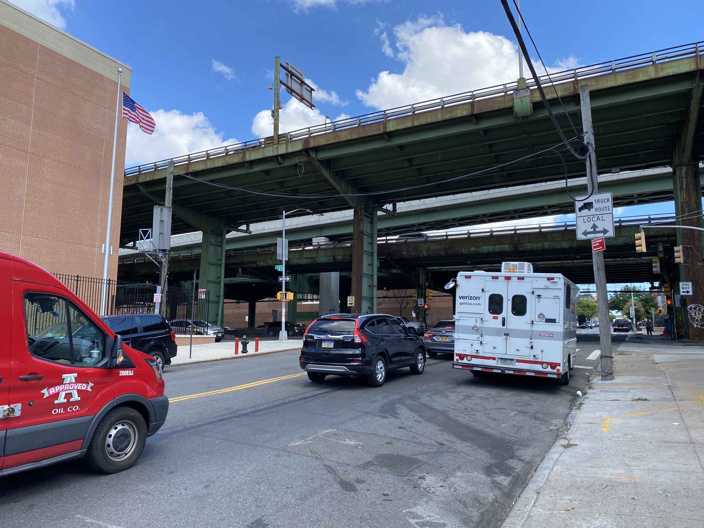

A new plan to solve traffic problems on Brooklyn's 3rd Avenue will be pursued
With citizen talks, NYC DOT prepare the new feasibility study process for Sunset Park transit improvements
By Eduardo González | Sep. 29, 2022
Lee en Español
To socialize the traffic problems in the Sunset Park area and provide a solution to 3rd Avenue traffic, the New York City Department of Transportation will hold community engagement forums as a prelude to a transit feasibility study; this, according to representatives of the Community Board of Brooklyn's District 7, it is gonna be done after a 10-year-long petition.
This was stated by Katherine Walsh, head of the District 7 Community Board's Transportation and Trailer Transit Commissions, who assured that the endorsement was given by Brooklyn Borough Transportation Commissioner Keith Bray.
"He has confirmed that they are going to do part of the study. They are going to do the community engagement forums (...) we are going to start the planning process with the Department of Transportation, other agencies, partners and community stakeholders. We are going to work on an outreach process to establish a community forum so that people can come and talk about their traffic experiences on 3rd Avenue," she said.
According to the NYC Crash Maper website, in most of the accidents on this avenue, it is unknown what caused them, but one of the main causes is the failure of motorists to yield the right of way.
This, coupled with the fact that 37.79% of the land area of Brooklyn Community District 7 is devoted to industrial activities, makes freight vehicle traffic a constant on 3rd Avenue, which is the main road to take the Belt Parkway and the Gowanus Expressway, the only avenues that connects the Borough of Brooklyn and the Borough of Staten Island.
The study they are requesting, Katherine says, will help to comprehensively evaluate the area and make modifications that do not hinder vehicle traffic and reduce risks to the neighbors.
"The reason the study is so important is because we will be able to assess how traffic is moving and then, once the study is completed, it will be able to make recommendations to us, which coupled with requests from the community, will allow us to make these changes." she said.
For neighbors like Luis Alvarez, who has lived in the area for eight years, the traffic lights are very short-lived, which represents a problem for those who cross the streets on their way to the daycare center on 60th Street, as well as for the elderly people, who have to wait for two green lights to cross the avenue, often staying in the middle of the intersection.
"Despite the fact that it is a very congested road, it is very, very wide. Then the traffic lights also sometimes do not give enough time to pass from one side to the other. It is also one of the problems it has (...) there are four lanes, that is, two lanes in each direction, so it is difficult. Sometimes it takes time and it is not enough".
Luis Álvarez
Sunset Park's Neighbor
"There are a lot of cars that go by on 59th Avenue that don't let the kids get to school. That's a problem that the kids have to be very careful about: crossing the street quickly, because these cars go by very fast".
Madeline Inocente
Sunset Park's Neighbor
Why is it important?
Connects with the highway
The location of this intersection has several particularities to consider, which in the mornings, hinder traffic, as it is the only exit to the highway, and is generally used by truck drivers and heavy haulers.
There are schools around

The area is home to the Magical Years Early Childhood Center, as well as on the other side, P.S. 506: The School of Journalism & Technology, which according to neighbors, intensifies the presence of children in the mornings.
It is used by many cyclists
Both private cyclists and delivery cyclists often pass through this road. Since 2011, the year in which the study was requested in the area, to date, 1083 cyclists have been injured and 6 have died in traffic related accidents.
It is a recurring problem

Only at the intersection of the 3th Avenue and 60st, 189 accidents have been recorded since August 2011 up to the closing of this edition, resulting in 352 people injured: 93 percent of them were motorists.